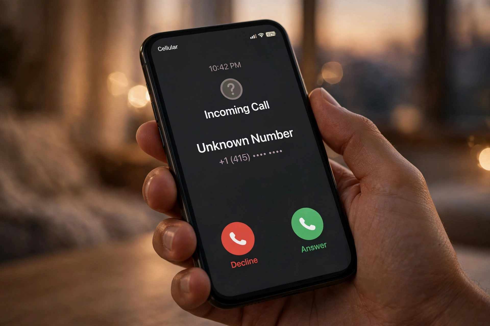

Telefon dzwoni, na ekranie obcy numer, a po drugiej stronie — cisza, bo nie zdążyłeś odebrać. Znasz to? Nieznane połączenia to dziś codzienność: telemarketerzy, ankieterzy, kurierzy, pomyłki, ale też próby wyłudzeń. Dobra wiadomość jest taka, że w większości przypadków możesz ustalić, kto dzwonił, w mniej niż minutę — bez oddzwaniania w ciemno.
Nie każde obce połączenie to zagrożenie. Najczęstsze powody to: firmy telemarketingowe i call center (ofertę poznasz po charakterystycznej pauzie po odebraniu), ankiety i badania opinii, firmy kurierskie i dostawcy potwierdzający adres, rekruterzy oraz zwykłe pomyłki. Osobna kategoria to oszuści — podszywający się pod bank, „wnuczka" albo policję — oraz tzw. połączenia wangiri: jedno krótki sygnał z drogiego numeru zagranicznego, który liczy na to, że oddzwonisz na numer premium.

Zasada numer jeden: najpierw sprawdź, potem dzwoń. Wpisz numer do wyszukiwarki numerów — tutaj możesz sprawdzić numer telefonu za darmo i zobaczyć, czy inni użytkownicy już go ocenili jako bezpieczny, uciążliwy albo niebezpieczny. Jeśli numer ma same negatywne komentarze („telemarketing", „oszustwo", „cisza po odebraniu"), najlepszą reakcją jest blokada, a nie oddzwonienie. Oddzwanianie na nieznane numery zagraniczne może natomiast kosztować majątek za minutę.
Wyszukiwarka numerów działa jak książka telefoniczna odwrotnie: zamiast nazwiska wpisujesz numer i dostajesz informacje o jego właścicielu lub charakterze — operatora, rodzaj numeru (komórkowy, stacjonarny), oceny i komentarze innych osób, które też odebrały to połączenie. Szerzej wyjaśniamy to tutaj: co to za numer — jak rozpoznać dzwoniącego. Im więcej osób zgłasza dany numer, tym trafniejsze są oceny dla kolejnych.
1. Nie oddzwaniaj od razu — zwłaszcza na numery zagraniczne i bardzo krótkie sygnały.
2. Sprawdź numer w wyszukiwarce i przeczytaj komentarze innych.
3. Jeśli to firma, z którą masz sprawę (bank, kurier, przychodnia), oddzwoń na jej oficjalny numer ze strony internetowej.
4. Numer oznaczony jako spam lub oszustwo — zablokuj w telefonie i zgłoś, pomożesz innym.
Całą procedurę opisaliśmy szerzej w poradniku
jak sprawdzić, kto dzwonił z nieznanego numeru.
Czy sprawdzenie numeru jest darmowe?
Tak — podstawowe sprawdzenie numeru w wyszukiwarce jest bezpłatne i nie wymaga zakładania konta.
Dzwonił numer, który wygląda jak zwykły polski, ale to oszustwo. Jak to możliwe?
Oszuści potrafią podszywać się pod cudze numery (tzw. spoofing), dlatego zawsze weryfikuj sprawę
samodzielnie: rozłącz się i oddzwoń na numer z oficjalnej strony instytucji.